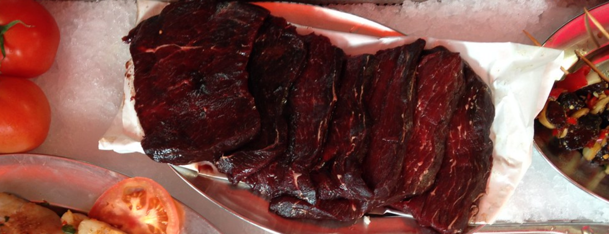

Filete de ballena

Un plato distinto y lleno de proteína
Aunque no es una carne habitual, la ballena tiene una textura muy parecida a la ternera, siendo perfecta cuando deseas un buen filete contundente pero con un toque de sabor marino.
Ingredientes (2 personas)
- 2 filetes de carne de ballena (depende del corte, unos 200g por persona)
- 2 dientes de ajo
- Un poco de perejil
- Pimienta negra
Pasos
- Primero prepararemos el acompañamiento. Por lo general, se pueden hacer unas patatas cocidas, arroz o algo de pan y ensalada. Mientras esto se prepara, seguimos con el resto de pasos.
- Picamos el ajo en rodajas finas y lo añadimos a una cucharada abundante de aceite ya caliente. Bajamos el fuego y lo cocinamos durante un minuto, hasta que se dore.
- Añadimos el filete de ballena. Si es muy grueso, podemos realizar unos cortes superficiales a lo ancho del filete para que se cocine correctamente. El fuego debe ser medio, y la carne debe quedar sellada por fuera, pero es importante que el interior quede rojo, ya que sino quedará seca, como si fuera ternera. Salpimentamos al gusto.
- Servimos junto al acompañamiento, añadimos perejil por encima ¡y a comer!
Inicio